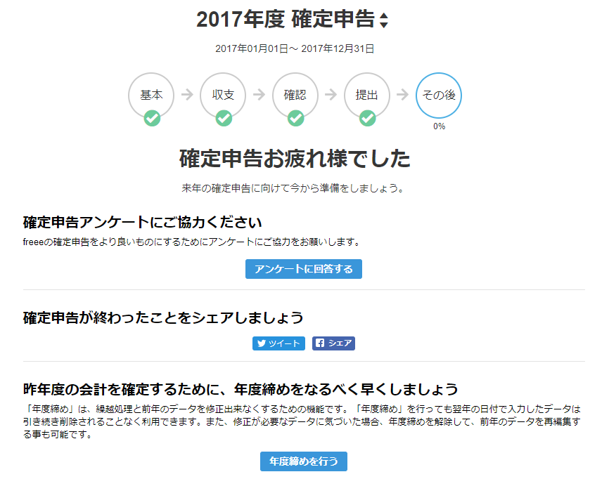

日記：今年も無事、確定申告をやっつけた。
公開日：

確定申告書B が印刷できないというトラブルに悩まされた今年の申告でしたが、先ほど、無事に終えることができました。freee から「まだ修正できてへんねん、すまんやで」というメールがきたのですが、手元で試したところ1日の夜には出力できるようになっていたみたい。旅行に出かける直前だったので提出が今日にまでずれ込んでしまいましたが、今までずっと未解決で放置だったというわけじゃないです。中の人、本当にお疲れ様です。
途中、コンビニでマイナンバーをコピーしたりしながら20分か30分ほど歩き、松山税務署へ書類をもっていったのですが、駐車場からあふれたクルマが列を成していて、いろいろ大変そうでした。しかも、隣の NHK？ のあたりで道路工事してて片側規制だし。この時期は混むのわかってんだから、工事の日をずらせばいいのにな。縦割り行政の弊害ってやつなのか、コミュニケーション不足というやつなのか。
今年で無職を始めて5年目になるけど、確定申告が終わるとやっと「春だなー」って感じです。
還付金の振り込みは1カ月半後ぐらいだとか。新年度の国民年金（1年前納）の支払いもあるからガッツリなくなってしまうけれど、その残りカスでだるやなぎぬいぐるみ計画を進められたらいいな。
追伸
引きこもり生活をしていたので気づかなかったのですが、フジのロゴも変わっていました（Twitter でちょっと耳にしてたけど、目にしたのは初めて）。なんかいろいろ変わってて、「春だなー」って感じです。